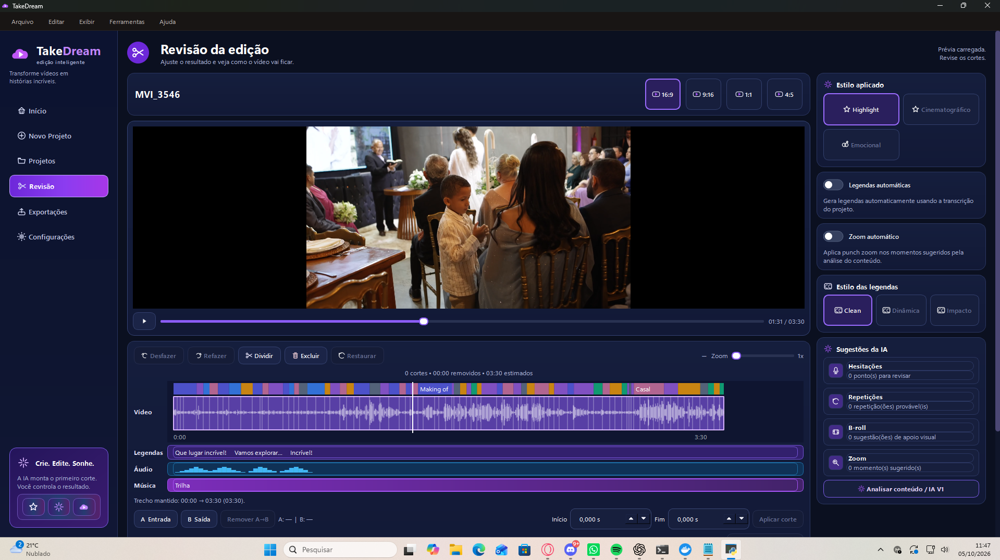
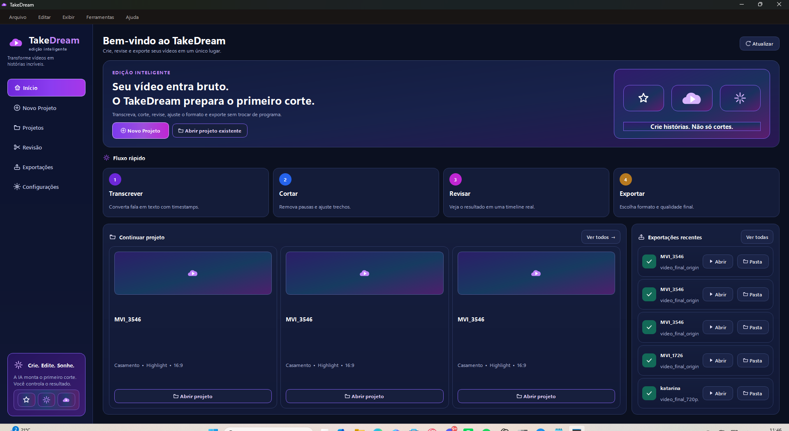
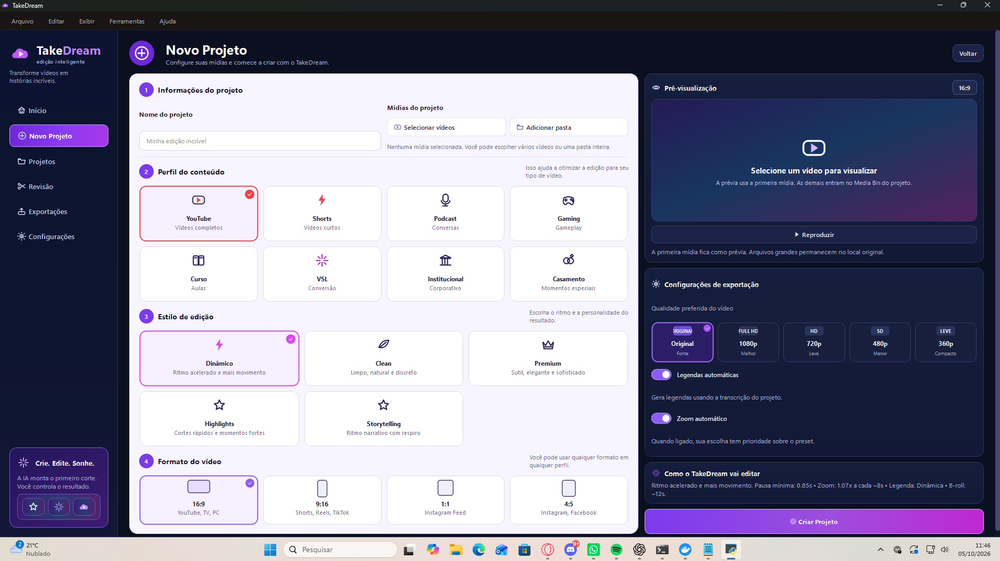

01DESKTOP • IA • PROCESSAMENTO DE MÍDIA
TakeDream
Software desktop de edição assistida por IA, criado para reduzir o trabalho manual do primeiro corte.
DESAFIO
Transcrição, identificação de silêncios, organização de cortes e revisão consomem grande parte do tempo inicial de uma edição.
SOLUÇÃO
Aplicação em Python/PySide6 com transcrição, análise de mídia, timeline, revisão de cortes e exportação em um fluxo único.
Ver repositório ↗Projeto em desenvolvimento ativo
INTERFACE REAL clique para ampliar


